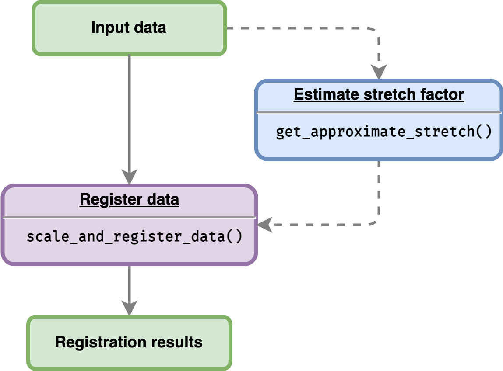

register-data.RmdThis vignette will show users on how to register data using the sample data provided within the package.

Before starting, users need to load all of the packages required:
GREAT package provides an example of data frame containing two different species Arabidopsis and B. rapa with two and three different replicates, respectively. This data frame can be read as follow:
# Gene expression data with replicates
all_data_df <- system.file("extdata/brapa_arabidopsis_all_replicates.csv", package = "GREAT") %>%
utils::read.csv()Note that the data has all of six columns required by the package as documented in ruthkr.github.io/GREAT/articles/prepare_data.html
| locus_name | accession | tissue | timepoint | expression_value | group |
|---|---|---|---|---|---|
| BRAA02G018970.3C | Col0 | apex | 7 | 0.4667855 | Col0-07-a |
| BRAA02G018970.3C | Col0 | apex | 7 | 0.0741901 | Col0-07-b |
| BRAA02G018970.3C | Col0 | apex | 8 | 0.0000000 | Col0-08-a |
| BRAA02G018970.3C | Col0 | apex | 8 | 0.0000000 | Col0-08-b |
| BRAA02G018970.3C | Col0 | apex | 9 | 0.3722542 | Col0-09-a |
| BRAA02G018970.3C | Col0 | apex | 9 | 0.0000000 | Col0-09-b |
| BRAA02G018970.3C | Ro18 | apex | 11 | 0.3968734 | Ro18-11-a |
| BRAA02G018970.3C | Ro18 | apex | 11 | 1.4147711 | Ro18-11-b |
| BRAA02G018970.3C | Ro18 | apex | 11 | 0.7423984 | Ro18-11-c |
| BRAA02G018970.3C | Ro18 | apex | 29 | 11.3007002 | Ro18-29-a |
| BRAA02G018970.3C | Ro18 | apex | 29 | 23.2055664 | Ro18-29-b |
| BRAA02G018970.3C | Ro18 | apex | 29 | 22.0307747 | Ro18-29-c |
To align gene expression time-course between Arabidopsis Col-0 and B. rapa Ro18, we can use function scale_and_register_data(). Stretch factors as one of the parameters of function scale_and_register_data() can be estimated using function:
get_approximate_stretch(
input_df = all_data_df,
accession_data_to_transform = "Col0",
accession_data_ref = "Ro18"
)
#> [1] 2.666667As we can see above, the approximation of the stretch factor is around 2.7. Therefore, users can use some values around the estimation value.
# Running the registration
registration_results <- scale_and_register_data(
input_df = all_data_df,
stretches = c(3, 2.5, 2, 1.5, 1),
shift_extreme = 4,
num_shifts = 27,
min_num_overlapping_points = 4,
initial_rescale = FALSE,
do_rescale = TRUE,
accession_data_to_transform = "Col0",
accession_data_ref = "Ro18",
start_timepoint = "reference"
)
#>
#> ── Information before registration ─────────────────────────────────────────────
#> ℹ Max value of expression_value of all_data_df: 262.28
#>
#> ── Analysing models for all stretch and shift factor ───────────────────────────
#>
#> ── Analysing models for stretch factor = 3 ──
#> ✓ Calculating score for all shifts (10/10) [2s]
#> ✓ Normalising expression by mean and sd of compared values (10/10) [55ms]
#> ✓ Applying best shift (10/10) [50ms]
#> ✓ Calculating registration vs non-registration comparison AIC & BIC (10/10) [134ms]
#> ✓ Finished analysing models for stretch factor = 3
#>
#> ── Analysing models for stretch factor = 2.5 ──
#> ✓ Calculating score for all shifts (10/10) [2.2s]
#> ✓ Normalising expression by mean and sd of compared values (10/10) [55ms]
#> ✓ Applying best shift (10/10) [52ms]
#> ✓ Calculating registration vs non-registration comparison AIC & BIC (10/10) [113ms]
#> ✓ Finished analysing models for stretch factor = 2.5
#>
#> ── Analysing models for stretch factor = 2 ──
#> ✓ Calculating score for all shifts (10/10) [2.2s]
#> ✓ Normalising expression by mean and sd of compared values (10/10) [47ms]
#> ✓ Applying best shift (10/10) [50ms]
#> ✓ Calculating registration vs non-registration comparison AIC & BIC (10/10) [99ms]
#> ✓ Finished analysing models for stretch factor = 2
#>
#> ── Analysing models for stretch factor = 1.5 ──
#> ✓ Calculating score for all shifts (10/10) [2s]
#> ✓ Normalising expression by mean and sd of compared values (10/10) [51ms]
#> ✓ Applying best shift (10/10) [52ms]
#> ✓ Calculating registration vs non-registration comparison AIC & BIC (10/10) [102ms]
#>
#> ✓ Finished analysing models for stretch factor = 1.5
#>
#> ── Analysing models for stretch factor = 1 ──
#> ✓ Calculating score for all shifts (10/10) [1.9s]
#> ✓ Normalising expression by mean and sd of compared values (10/10) [49ms]
#> ✓ Applying best shift (10/10) [49ms]
#> ✓ Calculating registration vs non-registration comparison AIC & BIC (10/10) [108ms]
#> ✓ Finished analysing models for stretch factor = 1
#>
#> ── Model comparison results ────────────────────────────────────────────────────
#> ℹ BIC finds registration better than non-registration for: 10/10
#>
#> ── Applying the best-shifts and stretches to gene expression ───────────────────
#> ✓ Normalising expression by mean and sd of compared values (10/10) [48ms]
#> ✓ Applying best shift (10/10) [52ms]
#> ℹ Max value of expression_value: 9.05
#> ✓ Imputing transformed expression values (10/10) [144ms]
#> Function scale_and_register_data() returns a list of seven data frames:
mean_df is a data frame containing mean expression value of each gene and accession for every time point.mean_df_sc is identical to mean_df, with additional column sc.expression_value which the scaled mean expression values.to_shift_df is a processed input data frame ready to be registered.shifted_mean_df is the registration result - after stretching and shifting.imputed_mean_df is the imputed registration result.all_shifts_df is a table containing candidates of registration parameters and a score after applying each parameter (stretch and shift factor).model_comparison_df is a table comparing the optimal registration function for each gene (based on all_shifts_df scores) to model with no registration applied.